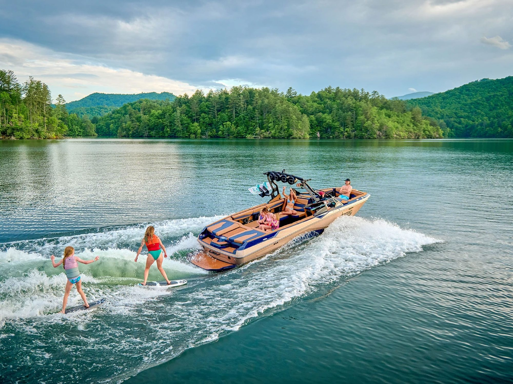

Wakeboarding vs. Wakesurfing: What Are the Differences?

Quick Answer
Wakeboarders stay strapped into bindings and hold a long rope (up to about 85 feet) for jumps and tricks. Wakesurfers ride a longer, binding-free board on a short 10–15 foot rope, then let go and surf the boat’s wave.
Wakeboarding and wakesurfing both have you riding a board on a boat’s wake, but the experience is very different. If you’re trying to decide which sport to try first — or which one your next boat should be set up for — here’s how they compare.
The Board
Wakesurf boards are longer than wakeboards and have no foot bindings. Wakeboards use bindings to lock your feet to the board, which is what lets riders launch off the wake for aerial tricks. Without bindings, wakesurfers rely on balance and body position, so each sport builds a different set of skills.
The Rope
Wakeboard ropes are much longer — up to about 85 feet — giving riders room behind the boat to cut across the wake and get air. Wakesurf ropes are only 10 to 15 feet long and are used just to get you up; once you catch the wave, you toss the rope back toward the boat.
The Technique
Wakeboarders are towed at a speed matched to their skill level so they can generate enough pop for tricks, staying connected to the boat the entire ride. Wakesurfers are pulled up to speed, then drop the rope and ride the wave freely, steering with their weight for more control over where they ride.
| Feature | Wakeboarding | Wakesurfing |
|---|---|---|
| Board | Shorter, with foot bindings | Longer and thicker, no bindings |
| Rope length | Up to about 85 ft | About 10–15 ft, dropped once you’re up |
| Riding style | Connected to the boat the whole time | Rope-free on the wave |
| Best for | Jumps, flips and aerial tricks | Carving, flow and balance |
Which Is Right for You?
If you love the idea of jumps, spins and big air, start with wakeboarding. If you’d rather carve a wave at a relaxed pace and feel like you’re surfing the ocean on a Missouri lake, wakesurfing is for you. Plenty of riders do both — and many of today’s wake boats are built to handle both styles.
Wakeboarding & Wakesurfing Gear in Springfield, MO
The Ski Shack carries wake and surf boats from Malibu, Axis and Nautique, plus the boards, ropes, vests and gear you need to get started in either sport. Stop by our Springfield showroom or Indian Point Pro Shop, or contact our team with any questions.